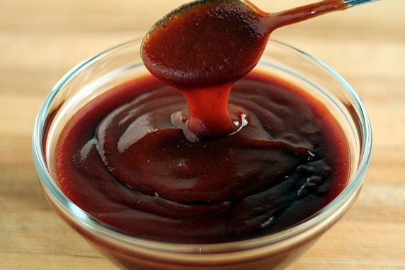

How You Make it

Meat
Season the meat with salt and brown sugar, put the ribs in a pressure pan and fill with whater until the whater cover the meat. Boil the meat 1 hour, open the pan, becarefull, you should first let the pressure stops. Check of it's tender and if is reserve for the sauce, if it's not, put back in pressure for about more 20 minuts.

Suace
Heat the Olive Oil and put the sugar, when it melts, put the other ingridients and mix keep mixing it until the sauce sitick in the spoun, it need to be nice and thick, it takes at least 35 minutes to reach the desire texture. Spread the sauce all over the ribs and take into the pre heated oven in 230 degrees Celcius.